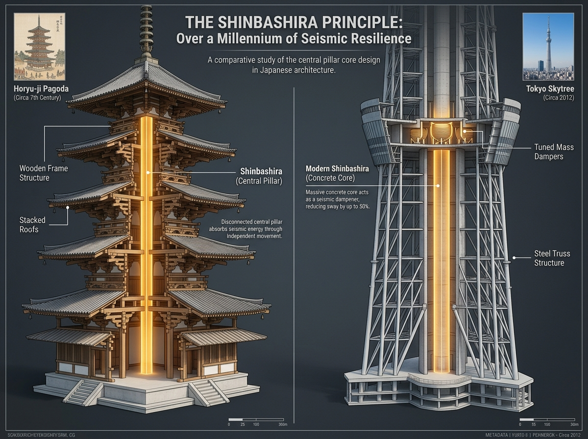
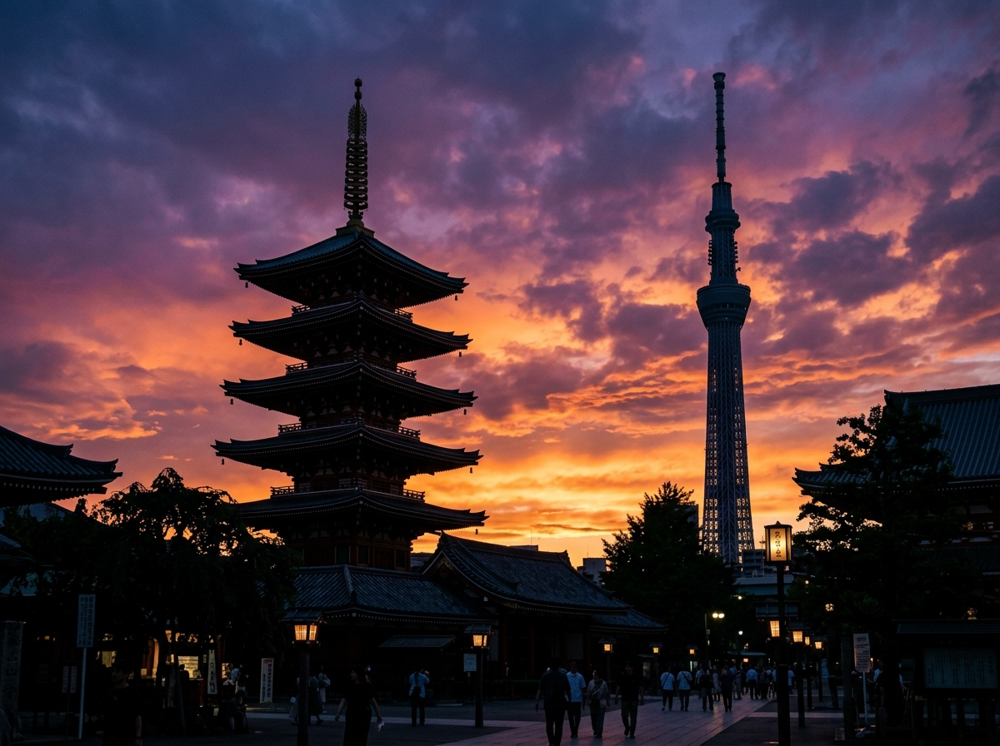
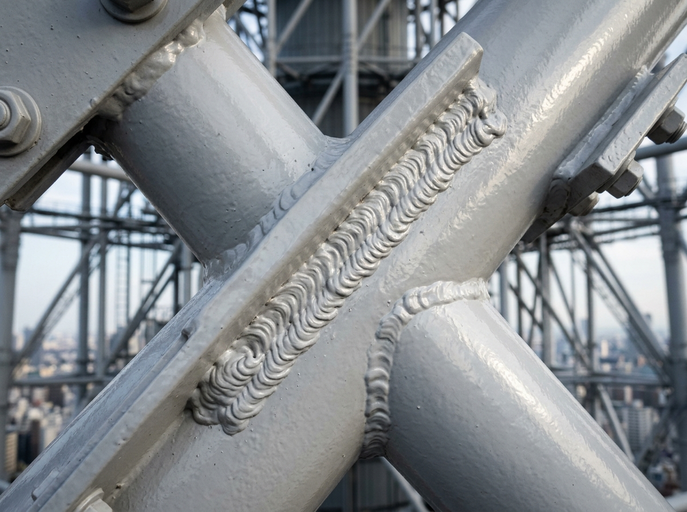

Okay, But Have You Heard About the 1,400-Year-Old Trick??
How ancient pagoda tech is secretly holding up the Tokyo Skytree
by Sari
Okay, I'll be honest. The first time I stood under the Skytree, my main reaction was: that is terrifyingly tall and I do not want to go up there.
I'm not great with heights. (My sister Kiri would just gaze up at it all calm and philosophical. I was calculating the nearest exit.)
But then I learned something that completely changed how I see this tower. And now I kind of love it? In a slightly anxious, genuinely fascinated way?
Here's the thing: the reason the Skytree doesn't topple over in Japan's constant earthquakes — the reason it's still standing after every tremor and typhoon — comes from a piece of design knowledge that's 1,400 years old. Not a metaphor. Literally 1,400 years old.
Let me explain, because honestly once you get it, you'll never look at a pagoda the same way again.

The shinbashira — the central pillar — glowing inside both the Horyu-ji pagoda and the Skytree. The same heartbeat, 14 centuries apart.
Chapter 1: The Pillar That Doesn't Actually Touch Anything
Okay so. Japan has hundreds of traditional five-storey pagodas. They've been through devastating earthquakes for over a millennium. And almost none of them have collapsed.
The secret is something called the shinbashira — the central pillar. And here's the part that blew my mind: the shinbashira doesn't hold the other floors up. It's not load-bearing in the way you'd expect. Instead, it hangs freely through the middle of the structure. When an earthquake hits, the outer frame and the central pillar sway at different rhythms — and those competing rhythms cancel each other out. The energy just... dissipates.
(I know that sounds almost too clever. I had to read it three times. But apparently this is real and it's been working since the Asuka period!)
Now here's where it gets properly cool. The engineers who designed the Skytree looked at this ancient trick and went: yeah, we're doing that. At the core of the Skytree sits a concrete cylinder — 8 metres wide, 375 metres tall — that's deliberately kept separate from the outer steel frame. They're connected only by oil dampers that absorb the shock energy. The whole system is basically a 21st-century remix of a 7th-century idea.
Kiri would probably say something elegant about continuity and the river of time. I'm just going to say: the ancient carpenters accidentally invented earthquake-proofing and we're still copying their homework. And that's amazing.
Chapter 2: The Colour That's Almost Not There
Quick question: what colour is the Skytree?
If you said "white," you're not wrong, but you're also not quite right. Up close, there's this pale, ghostly blue tint to it. Almost like the sky is bleeding into the steel. It's called Skytree White, and it's based on a traditional Japanese colour called aijiro — the softest, most washed-out shade of indigo.
And here's why I actually really love this detail: the people who designed it specifically chose a colour that makes the tower look smaller than it is. Because at 634 metres, if you painted it in anything bold or saturated, it would feel like it was yelling at the neighbourhood.
(Can you imagine a bright red Skytree? I shudder.)
Aijiro is this incredibly Japanese concept — the idea that the most impressive thing you can do is blend in beautifully. It's the visual equivalent of that person at a party who you only notice after twenty minutes, and then you can't stop noticing them.
Traditional indigo dyeing in Japan is a whole craft, a whole philosophy. Taking that and encoding it into the paint formula of a broadcasting tower is… I mean, it's a little pretentious, honestly? But also kind of beautiful. I'm choosing beautiful.

Senso-ji's pagoda in the foreground, the Skytree behind. Same silhouette logic — different centuries.
Chapter 3: Every Joint Was Made by a Human Being
This is the part that actually makes me feel a little emotional, not gonna lie.
The Skytree is made of this dense web of steel tubes — all those diagonal and horizontal pipes you can see on the lower section. And every single place those tubes connect? Hand-welded. By actual people. Skilled craftspeople who trained for years to be able to do this.
International engineers who've visited the Skytree apparently lose their minds over the welding seams. They're described as looking like dragon scales — this perfectly uniform, almost decorative texture that's a side effect of doing the job to an insane level of precision.
(Dragon scales on a building. Okay Japan. Okay.)
There's a word in Japanese: miyadaiku, the temple carpenters. These were the people who built structures like Horyu-ji using only hand tools — no nails in some cases, just joinery so precise that the wood locked together by geometry alone. The modern Skytree welders are, in a direct lineage, the same type of person. Different material. Different tools. Same obsession with perfection.
I find that genuinely moving. And also slightly intimidating because I can't even cut a straight line with scissors, but that's a me problem.
So Here's What I Think
I still don't want to go to the top of the Skytree. That part hasn't changed.
But I've gone from seeing it as "a very tall thing I am scared of" to "a very tall thing I am scared of, that also happens to be a 1,400-year argument for paying attention to the people who came before you."
Every earthquake it survives is because someone figured out the shinbashira in the 600s. Every time you see it against a cloudy sky and it almost disappears, that's aijiro doing its quiet work. And every joint holding those steel tubes together carries the fingerprints, almost literally, of a human being who cared too much about doing it right.
My sister Kiri would call it a meditation on impermanence or something. And honestly? Maybe she's not wrong.
I just think it's really, really cool.

A Skytree steel joint up close. The weld seam textures like dragon scales — ancient craft at modern scale.